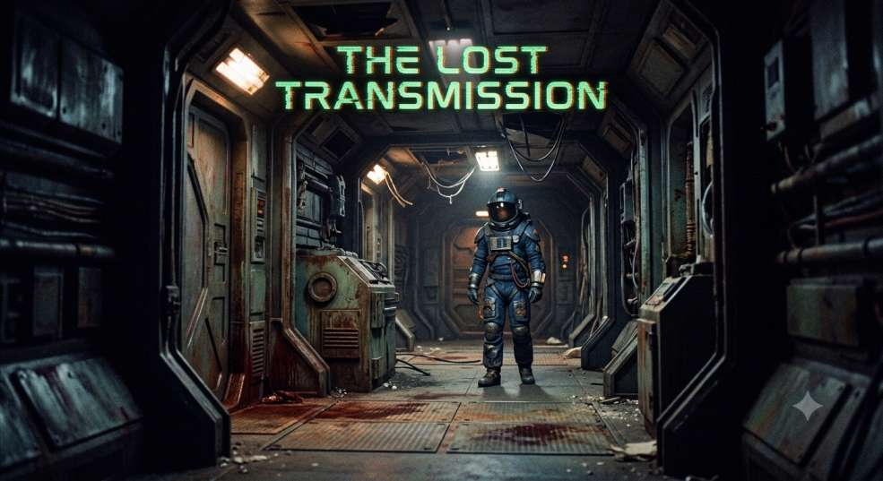

The Lost Transmission
The protagonist is on a space mission to uncover the truth hiding in a Research Vessel, with crews onboard, which lost contact with Earth years ago. He is tasked to find out what fate the crews went through, are they alive or not, and why the vessel lost contact with Earth; also he has to fix the communication system in that vessel, and return with the research files and crews back to Earth, all while surviving from.. well, something that lurks in the dark corners of the vessel. Complete this intense psychological horror game, and maybe the protagonist returns to Earth?